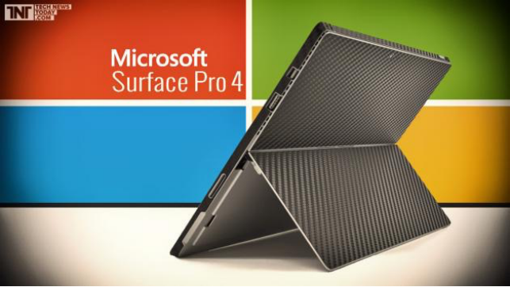
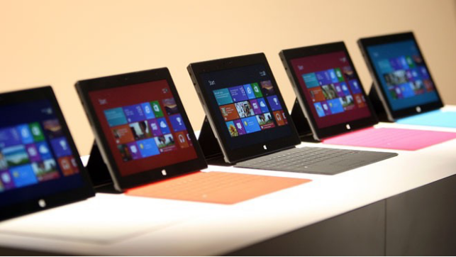
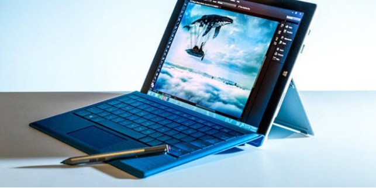
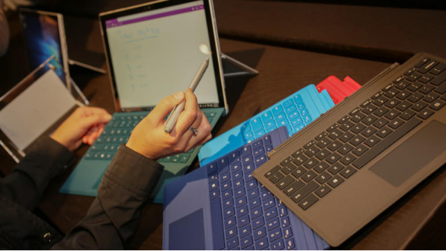

Surface（苏菲）
不再只属于女生
喝一杯咖啡看一个产品，这里是来自TuC工作室的问候！
又快到年底了，每年的这个时候恐怕都是大家更新办公 /学习用机的高峰期。想必，苹果和微软两家巨头在最近举行的发布会大家也多少有些关注。玫瑰金肾6的热潮还未退去，微软就又给我们带来了一款给人剁手动力的产品，Surface 4，这次TuC就为大家 “实力分析”苏菲4代到底值不值得入手！
1平板还是电脑 ?
微软在桌面平台的统治地位我们没必要过分强调了，可是他偏偏要任性为我们带来一款平板，这多少给消费者带来了一定的顾虑。不知道在读这篇文章的大家有多少人和TuC君一样在手机屏幕够大以后就连拿起iPad的欲望都没有了，这种情况下为什么我还要去考虑一款来自微软的平板呢 ?
这里，TuC就要替微软澄清一下亲女儿的市场定位了。如果你以为她的竞争对手是iPad你就误会她了，和桌面平台统一操作系统的Surface就好像一个从小打算考进清华北大的学霸，和iPad这个艺术特长生的目标完全不同。一定要在隔壁苹果班找到一个小伙伴来和她比较的话，恐怕也要至少选择Macbook Air才行。同样是针对轻量级办公的效率工具，如果说早期的Surface没能展现出应有的竞争力的话，只能怪工程师思维的父亲太过僵硬，没能给孩子找到合适的发展道路。
2外观有何吸引力?
首先看外观来得到第一印象，按照发布会上的出场顺序，我们先介绍Surface Pro 4，身材上，她采用了一块12.5英寸的屏幕，而我们更熟知的Macbook Air是13.3英寸。这里有一个细节需要注意，Air的屏幕长宽比是16 : 9 而Surface则是3 : 2。这样一来我们只需要利用简单的几何知识计算一下就知道，Air的面积是75.58平方英寸，Surface Pro
4是72.11英寸，视觉感官上其实并后者没有比前者小多少。要知道，如果12.5英寸的屏幕同样采用16 : 9屏幕比例，Surface的屏幕大小将会只有66.76平方英寸。也就是说，通过改变屏幕比例，微软无形地为用户增加了8%的显示面积。这样一双迷人的大眼睛，也就成了四公主的先天优势。此外，一如既往的铝镁合金材质其实并没有多么的吸引眼球，苹果成为街机之后，无论是手机还是电脑，大家在高端机身上对金属外壳的态度大多变成了 “理应如此”。仅凭外表漂亮，已经不再是亮点。
Surface book名副其实，真的被设计成了一本书的模样。如果普通版本的Surface和Surface pro更像是从平板跨界到电脑，那么Surface book就该算是一个从笔记本跨界到平板的产品了。崭新的键盘部分默认成为了产品的一部分，去除了传统支架设计转而使用铰链设计，一切都使得她能给用户带来更加贴近传统笔记本的使用体验。磁力吸附的Surface pencial应该算是一个用心的设计。以往通过笔套固定手写笔虽然还算实用，但是完全没有发挥出一个设计师的想象力。此外，长时间使用还会有黏贴部分脱落的问题。而这一设计恰好解决了这个问题。
3性能如何？

这部分TuC想和大家聊一聊Surface到底好不好用。最新的Surface 4在欧洲势必还暂时拿不到货，所以这部分我们是基于手头上Surface 3的上手体验加以分析推论和大家进行分享的。
按照传统从市场定位谈起，要判断一款产品好不好用，第一件事就是要找到它的目标人群。传统的Surface总被定义成效率工具，换句话来说，它就是用来应付一些没有专业级影音处理需求的办公场景的。处理这种工作的话，其实对产品性能的要求其实是很低的，能用得到的软件也很少。主要的需求点还是体现在文档处理的便捷性以及即时云备份上。作为一个平板级便携度的产品，它在办公效率上的表现相信市面上的产品是无出其右的。Ipad毕竟从一开始就选择了轻量级娱乐作为自己的发展方向并且搭载的是ios系统，办公？还是别考虑它了。即便是我手上的非pro版本surface 3，在我用来进行信息收集 、文案处理、小组沟通及协作办公的过程中也完全给我带来了满意的体验。如果你还有着更高程度的要求，我相信pro版本也一定能令你满意。当然，游戏场景不在考虑范围内。我在介绍win 10的时候很多人向我问起了为什么没有重点提及软件兼容性问题，这个问题的答案有些尴尬，因为我在surface 3上体验win 10的使用场景中很少有第三方应用出现。
Surface book其实该算作一个崭新的产品线，它和传统surface的关系其实并不大。从一面市就选择了Macbook pro作为自己的竞争对手，显然它是打算面向高端用户的。官方数据声称顶配产品的比较中，Surface book具有两倍于对手的性能也是着实让大家吃惊了一下。要强调的是，这里很大程度上是有微软黑科技的助力的。顶配Surface Book的键盘中藏了一块显卡，这是什么概念？并不是简单的把显卡做小以及处理好散热问题这么简单，微软在这里有一个大胆的举动----显卡热插拔(即插即用)。发布会上看到这里我真的是服了，毫无争议的革命性的改动。搭配第六代i7处理器，一下子就在性能上达到了令人惊艳的高度，应付专业级使用场景也变得游刃有余。
4是否值得购入？

坦率地说，无论是有着怎样使用需求的用户，这次的新一代Surface中都能找到满足自身需求的产品。问题是，为了满足自己的使用需求，用户愿意花多少钱来埋单。如果不拿来玩游戏，那么很简单，传统的Surface四代或者pro版本都是你很好的选择。尤其对女生来说，高度便携性让你轻松地可以把它放在随身的手提包里面而不显得累赘。
但是，如果想要获得一块独立显卡来玩游戏，入手Surface就很可能不是理想的选择了。毕竟这是高配Surface book独享的待遇，上手成本甚至高过了Alienware。
总的来说，新苏菲的使用场景由于硬件性能的提升一定会实现拓展，不再只能应付“小白级”需求。如果钱不是问题，高配Surface book更会让高端玩家大呼过瘾，至于到底要不要入手大家则需要冷静考虑，毕竟Surface能做的事很多价格相对更低的产品同样能做。
最后，感谢大家的关注。喝一杯咖啡，看一个产品，这里是TuC_Studio。欢迎大家关我们的官方微博和公众号注，我们下期再见。
TuC工作室
公众微信号：TuC_Studio
官方微博：http://weibo.com/tucstudio
欢迎关注！